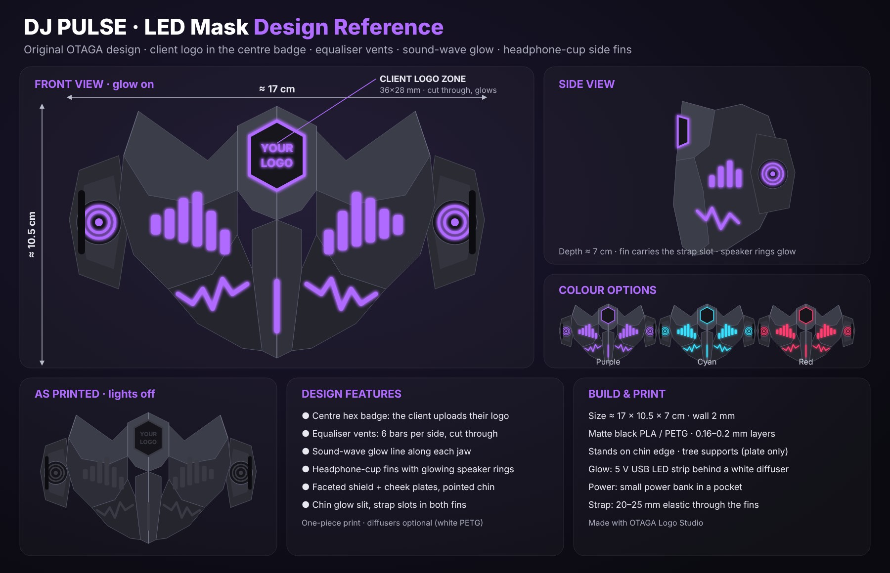

An original light-up mask built around the artist's own logo, which glows from the centre badge. Shown here as a concept before printing.

About 17 × 10.5 × 7 cm, printed as one piece in matte black. A 5 V USB LED strip behind a white diffuser lights it, powered by a small power bank. An elastic strap goes through the fins.
Send the logo as a large PNG or SVG and pick a glow colour (purple, cyan or red). We'll show the mask with the real logo, then print a first sample to check the fit.